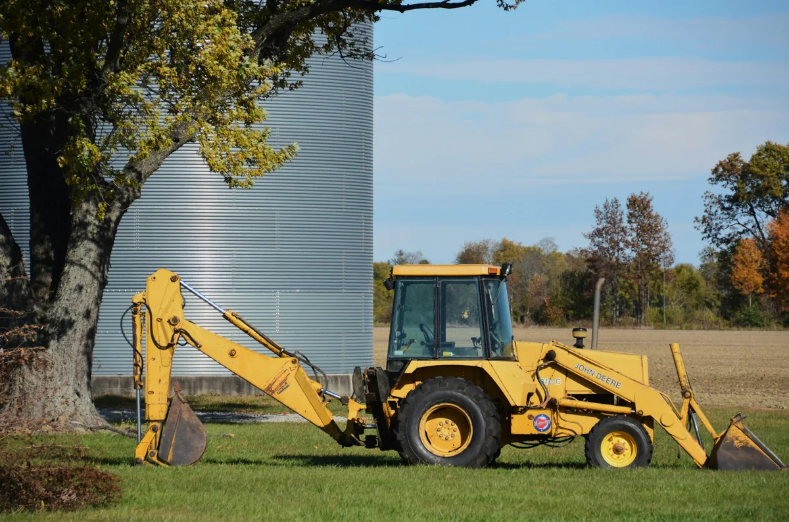

Una retroexcavadora per al teu projecte
MMP ofereix el lloguer d’una retroexcavadora al Vallès Occidental. Abans de planificar els treballs, cal consultar la disponibilitat de la màquina i les condicions del lloguer.

Quina informació cal preparar?
Per valorar una petició de lloguer, explica on es farà l’obra i quin treball necessites. Això permet consultar si la màquina és adequada i concretar les condicions.
- Ubicació del terreny i espai d’accés per a la màquina.
- Tipus de feina i característiques del terreny.
- Dates previstes i durada aproximada.
- Necessitat de transport i d’operador.
Preguntes freqüents sobre el lloguer
Quin preu té el lloguer?
No hi ha una tarifa publicada. Cal consultar el preu segons la durada i les condicions del servei abans de confirmar el lloguer.
Inclou operador i transport?
Aquestes condicions s’han de confirmar amb MMP. No s’han de donar per incloses en el lloguer.
Es pot reservar directament des del web?
No. No es poden confirmar reserves des del web.
Altres serveis de MMP al Vallès Occidental
Si necessites preparar un terreny, consulta també els serveis d’excavacions, anivellament i excavació de piscines.
Pots veure la zona de treball al mapa del Vallès Occidental.